Креирано 2025-12-06 Sat 21:51, притисни ESC за мапу, Ctrl+Shift+F за претрагу, "?" за помоћ
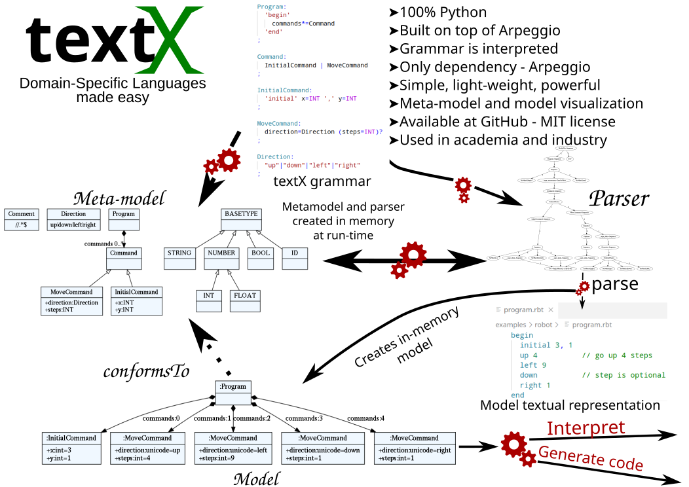
~> mkdir jsd
~> cd jsd
~/jsd> uv init
Initialized project `jsd`
?main ~/jsd> ls
main.py pyproject.toml README.md
?main ~/jsd> uv add textx[cli]
Using CPython 3.14.0
Creating virtual environment at: .venv
Resolved 5 packages in 8ms
Installed 3 packages in 15ms
+ arpeggio==2.0.3
+ click==8.3.1
+ textx==4.2.3
?main ~/jsd> uv run textx
Usage: textx [OPTIONS] COMMAND [ARGS]...
Options:
--debug Debug/trace output.
--help Show this message and exit.
Commands:
check Check/validate model given its file path.
generate Run code generator on a provided model(s).
list-generators List all registered generators
list-languages List all registered languages
version Print version info.
~> mkdir jsd
~> cd jsd
~/jsd> uv init
Initialized project `jsd`
?main ~/jsd> uv add git+https://github.com/textx/textx@master
Using CPython 3.14.0
Creating virtual environment at: .venv
Resolved 3 packages in 210ms
Updated https://github.com/textx/textx (6ef5164d77988a8b905a98748e90586c44efba9e)
Built textx @ git+https://github.com/textx/textx@6ef5164d77988a8b905a98748e90586c44efba9e
Prepared 1 package in 2.20s
Installed 2 packages in 2ms
+ arpeggio==2.0.3
+ textx==4.3.0.dev0 (from git+https://github.com/textx/textx@6ef5164d77988a8b905a98748e90586c44efba9e)
~> mkdir jsd
~> cd jsd
~/jsd> git clone git@github.com:textX/textX
Cloning into 'textX'...
remote: Enumerating objects: 14302, done.
remote: Counting objects: 100% (2641/2641), done.
remote: Compressing objects: 100% (975/975), done.
remote: Total 14302 (delta 1463), reused 2486 (delta 1365), pack-reused 11661 (from 1)
Receiving objects: 100% (14302/14302), 17.28 MiB | 12.45 MiB/s, done.
Resolving deltas: 100% (8808/8808), done.
~/jsd> cd textX
master ~/jsd/textX> make dev
rm -fr build/
rm -fr dist/
rm -fr .eggs/
...
+ urwid-readline==0.15.1
+ wcwidth==0.2.14
+ webencodings==0.5.1
HelloWorldModel:
'hello' to_greet+=Who[',']
;
Who:
name = /[^,]*/
;
from textx import metamodel_from_file
hello_meta = metamodel_from_file('hello.tx')
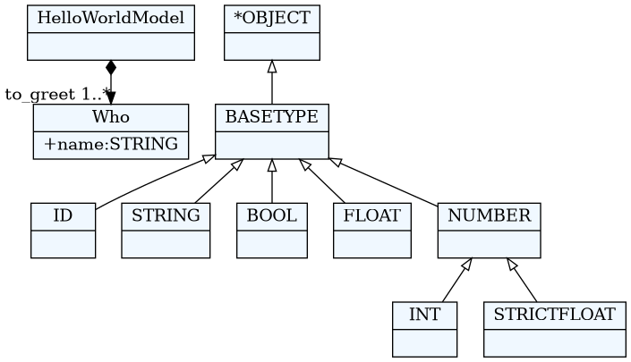
hello World, Solar System, Universe
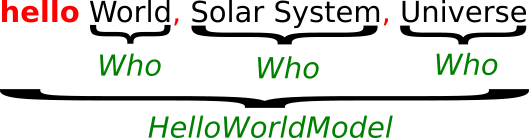
example_hello_model = hello_meta.model_from_file('example.hello')
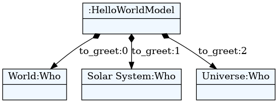
HelloWorldModel објекат садржи Пајтон листу to_greet).Ако желимо можемо проверити граматику у току развоја:
textx check hello.tx
/home/igor/repos/igordejanovic.github.io/courses/tech/textX/hello.tx: OK.
У случају грешке биће пријављена тачна локација.
Error in meta-model file. Expected 'abstract_rule_ref' at position (6, 9) => ': name |*= /[^,]*/ '.
или визуализовати
textx list-generators
any -> dot textX Generating dot visualizations from arbitrary models textX -> dot textX Generating dot visualizations from textX grammars textX -> PlantUML textX Generating PlantUML visualizations from textX grammars
textx generate hello.tx --target dot
Generating dot target from models: /home/igor/repos/igordejanovic.github.io/courses/tech/textX/hello.tx -> /home/igor/repos/igordejanovic.github.io/courses/tech/textX/hello.dot To convert to png run "dot -Tpng -O hello.dot"
fajl robot.tx
Program:
'begin'
commands*=Command
'end'
;
Command:
InitialCommand | MoveCommand
;
InitialCommand:
'initial' x=INT ',' y=INT
;
MoveCommand:
direction=Direction (steps=INT)?
;
Direction:
"up"|"down"|"left"|"right"
;
Comment:
/\/\/.*$/
;
fajl program.rbt
begin
initial 3, 1
up 4
left 9
down
right 1
end
from textx import metamodel_from_file
robot_mm = metamodel_from_file('robot.tx')
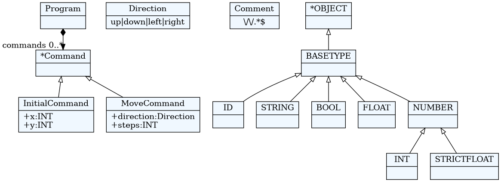
textx generate robot.tx --target dot
dot -Tpng -O robot.dot
robot_model = robot_mm.model_from_file('program.rbt')
begin
initial 3, 1
up 4
left 9
down
right 1
end
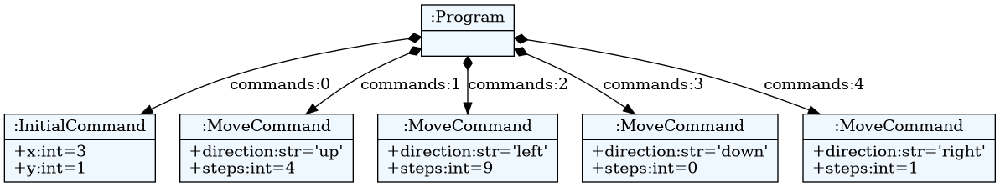
textx generate program.rbt --grammar robot.tx --target dot
dot -Tpng -O program.dot
class Robot(object):
def __init__(self):
# Initial position is (0,0)
self.x = 0
self.y = 0
def __str__(self):
return "Robot position is {}, {}.".format(self.x, self.y)
def interpret(self, model):
# model is an instance of Program
for c in model.commands:
if c.__class__.__name__ == "InitialCommand":
print("Setting position to: {}, {}".format(c.x, c.y))
self.x = c.x
self.y = c.y
else:
dir = c.direction
print("Going {} for {} step(s).".format(dir, c.steps))
move = {
"up": (0, 1),
"down": (0, -1),
"left": (-1, 0),
"right": (1, 0)
}[dir]
# Calculate new robot position
self.x += c.steps * move[0]
self.y += c.steps * move[1]
robot = Robot()
robot.interpret(robot_model)
begin
initial 3, 1
up 4
left 9
down
right 1
end
Setting position to: 3, 1 Robot position is 3, 1. Going up for 4 step(s). Robot position is 3, 5. Going left for 9 step(s). Robot position is -6, 5. Going down for 0 step(s). Robot position is -6, 5. Going right for 1 step(s). Robot position is -5, 5.
Проблем: Ако не задамо корак подразумевано је 0 (textX дефинише default вредности за базичне типове).
def move_command_processor(move_cmd):
"""
This is object processor for MoveCommand instances.
It implements a default step of 1 in case not given
in the program.
"""
if move_cmd.steps == 0:
move_cmd.steps = 1
MoveCommand:
direction=Direction (steps=INT)?
;
Регистрација процесора на мета-моделу:
# Register object processor for MoveCommand
robot_mm.register_obj_processors({'MoveCommand': move_command_processor})
Сада се робот понаша исправно.
Setting position to: 3, 1 Robot position is 3, 1. Going up for 4 step(s). Robot position is 3, 5. Going left for 9 step(s). Robot position is -6, 5. Going down for 1 step(s). Robot position is -6, 4. Going right for 1 step(s). Robot position is -5, 4.
textX метајезик, односно граматика, се састоји од скупа правила.
На пример, ако развијамо језик за опис цртежа, концепти овог језика би могли
бити Shape, Line, Circle итд. Следеће правило се користи да опише концепт
Circle:
Circle:
'Circle' '(' color=ID ',' size=INT ')'
;
Постоје три врсте правила у textX-у:
Обична правила су правила која садрже бар један израз доделе (видети 5.15), односно имају дефинисане атрибуте. Ова врста правила ће за последицу имати динамичко креирање Пајтон класа које ће бити инстанциране за време парсирања улазног стринга.
На пример:
InitialCommand:
'initial' x=INT ',' y=INT
;
Правило InitialCommand ће довести до креирања Пајтон класе истог имена чије
instance će imati dva atributa: x и y.
Апстрактна правила су правила која немају изразе доделе и референцирају бар једно апстрактно или обично правило. Најчешће су дефинисана као уређени избор других правила јер се користе да генерализују друга правила. На пример:
Program:
'begin'
commands*=Command
'end'
;
Command:
MoveCommand | InitialCommand
;
У овом примеру, Пајтон објекат у листи commands ће бити или MoveCommand или
InitialCommand. Command правило је апстрактно. Ово правило никада неће
резултовати Пајтон објектом.
Апстрактно правило може да се користи и у референцама повезивања (видети 5.21). На пример:
ListOfCommands:
commands*=[Command][',']
;
Такође, апстрактна правила могу референцирати правила препознавања и базичне типове. На пример:
Value:
STRING | FLOAT | BOOL | Object
| Array | "null"
;
У овом примеру, базични типови као и препознавање стринг "null" су правила
препознавања, али Object и Array су обична правила и стога је Value правило
апстрактно.
Апстрактна правила могу бити сложена секвенца или уређени избор референци и правила препознавања док год имамо бар једну референцу на апстрактно или обично правило. На пример:
Value:
'id' /\d+-\d+/ | FLOAT | Object
;
Правило чије тело се састоји само од једне референце препознавања на друго апстрактно или обично правило је такође апстрактно правило:
Value:
OtherRule
;
Уколико је OtherRule апстрактно или обично правило тада је и Value апстрактно
правило.
Widget:
"edit"|"combo"|"checkbox"|"togglebutton"
;
Name:
STRING|/(\w|\+|-)+/
;
Сва базична, имплицитна, textX правила (нпр. INT, STRING, BASETYPE) су правила
препознавања.
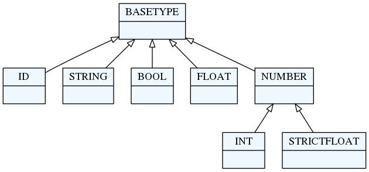
Препознати уграђени типови се аутоматски конвертују у одговарајуће Пајтон типове и постављају на подразумевану вредност у оквиру опционих препознавања.
Поред уграђених базичних правила, правила препознавања су правила најнижег нивоа. Представљају основне градивне јединице сложенијих правила. Ова правила ће конзумирати део улаза уколико је препознавање успешно.
Постоје две врсте препознавања: препознавање стринга и препознавање регуларног израза.
Препознавање стринга се пише као стринг у једноструким или двоструким знацима навода. Овако написано правило препознаће задати стринг са улаза у облику у ком је задат.
Примери:
'blue'
'zero'
'person'
Препознавање регуларног израза користи Пyтхон регуларне изразе1 који се наводе
унутар / /. Дакле, дефинишу класу стрингова који се могу наћи на улазу.
Примери:
/\d+/ — препознаје стринг од једне или више цифри./\d{3,4}-\d{3}/ — 3 или 4 цифре, затим '-' па затим још 3 цифре./[^}]*/ — нула или више карактера различитих од '}'.Секвенца је најједноставнији сложени израз који се добија навођењем подизраза један иза другог. На пример, следеће правило:
Colors:
"red" "green" "blue"
;
је дефинисано као секвенца која се састоји од три стринг препознавања (red,
greeen i blue). Секвенца ће успешно бити препозната ако су препознати сви њени
подизрази у редоследу у ком су наведени. Претходно Colors правило ће препознати
следећи стринг:
red green blue
Уколико је укључено аутоматско прескакање празних карактера (whitespace skip), што је подразумевано, тада се може између два подизраза у секвенци наћи произвољан број празних карактера као што је приказано у претходном примеру.
Уређени избор се наводи као скуп израза раздвојених знаком |. Овај израз ће
покушати да препозна подизразе с лева на десно. Први израз који се успешно
препозна биће коришћен као резултат препознавања.
На пример, следеће правило
Color:
"red" | "green" | "blue"
;
ће препознати или реч red или green или blue при чему ће парсер да покуша сваки
од подизраза с лева на десно.
Опционо препознавање је израз који ће да покуша да препозна свој подизраз ако може, али ће успети у препознавању и уколико подизраз није препознат.
На пример, уколико имамо правило
MoveUp:
'up' INT?
;
INT ће бити опционо (јер је наведен знак ?) па ће бити могуће навести број иза
речи up, али неће бити обавезно.
Следеће линије ће бити успешно препознате претходним правилом:
up 45
up 1
up
Опциони изрази могу бити и сложенији. На пример, код правила
MoveUp:
'up' ( INT | FLOAT )?
;
имамо да је уређени избор опциони тако да ћемо у овом случају моћи навести цео
или реалан број (INT или FLOAT), али нисмо обавезни да то учинимо.
Понављање нула или више пута (zero or more) се наводи употребом оператора *
иза подизраза. Подизраз ће у том случају бити препознат нула или више пута.
На пример, уколико имамо правило
Colors:
("red" | "green" | "blue")*
;
Следећи улаз ће бити успешно парсиран:
red blue green
али такође и
red blue blue red red blue green
или празан стринг (препознавање нула пута).
Понављање једном или више пута се наводи употребом оператора + иза подизраза.
Подизраз ће у том случају бити препознат један или више пута.
На пример, уколико имамо правило које је слично претходном, али користи овај облик понављања
Colors:
("red" | "green" | "blue")+
;
обавезно је навођење бар једне боје, али може се навести и више у произвољном редоследу и са понављањем као и код претходног правила. Дакле, ово правило не препознаје празан стринг.
Доделе се користе као део поступка за дедукцију метамодела. Свака додела резултује креирањем атрибута мета-класе креиране textX правилом.
Person:
name=Name ',' surname=Surname ','
age=INT ',' height=INT ';'
;
Напомена: Правило Name и Surname су дефинисани у граматици, али нису дати у овом
примеру.
Претходни пример описује правило и мета-класу Person које ће парсирати и
инстанцирати објекат са четири атрибута.
Пример:
Petar, Petrović, 25, 185;
Зарези, дати у претходном примеру, који ће бити препознати између препознавања правила доделе, као и тачка-зарез на крају, морају се наћи у улазном стрингу, али ће бити одбачени приликом креирања модела јер немају никакво семантичко значење. Кажемо да представљају синтаксни шум.
Увек када је на RHS неки од базичних типова (нпр. INT, BOOL, FLOAT, ID) доћи ће
до конверзије препознатог стринга у одговарајући Пајтон тип (нпр. int, bool,
float, str).
Ако је на RHS препознавање стринга или регуларног израза као у следећем примеру:
Color:
color=/\w+/
;
тада ће атрибут на LHS (color) бити постављен на вредност коју препозна RHS
правило.
Уколико се на RHS налази референца на друго правило тада ће бити препознат и инстанциран објекат класе датог правила и атрибут на LHS ће бити референца на дату инстанцу. На пример:
Project:
'project' name=ID 'lead' lead=Person
;
lead атрибут биће референца на објекат класе Person а правило Person мора
успешно препознати овај објекат иза кључне речи lead.
Постоје четири врсте доделе: obična, bulova, nula ili više и jedan ili više.
Обична додела ( = ) ће обавити препознавање RHS једном и објекат који се креира доделити атрибуту на LHS.
a=INT
b=FLOAT
c=/[a-Z0-9]+/
dir=Direction
Булова додела ( ?= ) ће поставити LHS атрибут на True уколико је RHS препознат
на улазу или на False уколико није.
cold ?= 'cold'
number_given ?= INT
Додела нула или више ( *= ) ће препознавати RHS све док успева и све објекте редом сместити у Пајтон листу која је на LHS. Ако препознавање не успе ни једном LHS ће бити празна листа.
commands*=Command // опциони низ команди
numbers*=INT // опциони низ целих бројева
Додела један или више ( += ) ради исто као претходна с тим што RHS мора да препозна бар један објекат тј. LHS никада неће бити празна листа.
numbers+=INT // низ целих бројева, мора постојати бар један
Правила могу да се међусобно референцирају. Референце се наводе на RHS. Постоје два начина референцирања правила: референцирање преко препознавања и референцирање преко везе.
Structure:
'structure' '{'
elements*=StructureElement
'}'
;
У претходном примеру правило Structure референцира преко препознавања правило
StructureElement. Унутар тела Structure концепта, биће препознато нула или више
инстанци StructureElement класе. Инстанце ће бити додељене elements атрибуту
који ће, у овом случају, бити типа Пајтон листе.
ScreenType:
'screen' name=ID "{"
'}'
;
ScreenInstance:
'screen' type=[ScreenType]
;
type атрибут који припада правилу ScreenInstance референцира преко везе правило
ScreenType.
Ово би био пример правилне употребе:
// Ово је дефиниција ScreenType објекта
// који се зове Introduction
screen Introduction {
}
// А ово је инстанца ScreenInstance која
// референцира претходни Introduction ScreenType.
screen Introduction
Подразумевано се користи ID правило за препознавање назива циљног објекта.
Уколико желимо то да променимо можемо урадити следеће:
ScreenInstance:
'screen' type=[ScreenType|WORD]
;
У претходном примеру ће за препознавање имена циљног објекта бити коришћено
правило WORD.
Not — негативни поглед унапред (!) — Успева уколико правило које следи иза
! предиката не препознаје наставак улазног стринга и обрнуто.
Пример проблема:
Expression: Let | ID | NUMBER;
Let:
'let'
expr+=Expression
'end'
;
У претходном примеру имамо рекурзивно правило Let које се индиректно референцира
преко правила Expression. Проблем је у томе што ће ID правило које се позива из
Expression правила препознати кључну реч end што ће довести до тога да ниједно
Let правило неће моћи успешно да се заврши.
Да бисмо решили овај проблем модификујемо граматику на следећи начин:
Expression: Let | MyID | NUMBER;
Let:
'let'
expr+=Expression
'end'
;
Keyword: 'let' | 'end';
MyID: !Keyword ID;
Уместо директне употребе уграђеног ID правила уводимо правило MyID које користи
Not синтаксни предикат да спречи препознавање кључних речи let и end као изразе
Expression правила. На овај начин ће end бити конзумирано као завршетак Let
правила и граматика ће исправно функционисати.
And — позитивни поглед унапред (&) — Успева уколико правило које следи иза
& предиката препознаје наставак улазног стринга и обрнуто.
Пример:
Model:
elements+=Element
;
Element:
AbeforeB | A | B
;
AbeforeB:
a='a' &'b' // правило успева само
// ако 'b' следи после 'a'
;
A: a='a';
B: a='b';
Уколико имамо улазни стринг "a a a b", прва два a токена ће бити препознати
правилом A док ће трећи токен а бити препознат правилом AbeforeB. Иако се увек
проверава прво AbeforeB, правило неће успети за прва два a токена јер иза не
следи токен b. Последњи токен ће бити препознат правилом B јер га претходно
успешно правило AbeforeB није конзумирало са улаза.
Некада је потребно дефинисати правило препознавања које ће вратити само део
препознатог улаза. У овом случају можемо користити оператор за уклањање
препознатог улаза (-) који се наводи после израза препознавања.
На пример:
FullyQualifiedID[noskipws]:
/\s*/-
QuotedID+['.']
/\s*/-
;
QuotedID:
'"'?- ID '"'?-
;
Користе се за модификацију понашања свих оператора понављања (*, +, *=,
+=). Наводе се унутар угластих заграда иза оператора понављања. Може се
навести више модификатора и у том случају се раздвајају зарезима.
У текућој имплементацији је дефинисано два модификатора понављања: модификатор сепарације и модификатор краја линије.
Модификатор сепарације (Separator modifier) се користи да дефинише сепаратор код вишеструког препознавања. Наводи се као једноставно препознавање (препознавање стринга или регуларног израза).
numbers*=INT[',']
45, 47, 3, 78
Такође, можемо дефинисати као модификатор препознавање регуларног израза. На пример:
fields += ID[/;|,|:/]
first, second; third, fourth: fifth
Модификатор краја линије (End-of-line terminate modifier) се наводи као кључна
реч eolterm. Уколико је укључен овај модификатор оператори понављања ће
завршити понављање на крају текућег реда тј. радиће само за текући ред.
STRING*[',', eolterm]
Код овог примера вршимо препознавање нула или више стрингова раздвојених зарезима, али само унутар текућег реда. Ако задамо следећи улаз:
"first", "second", "third"
"fourth"
правило ће препознати и конзумирати само прави ред. Стринг "fourth" неће бити
обухваћен.
Пример креирања метамодела из граматике дефинисане у фајлу:
from textx.metamodel import metamodel_from_file
my_metamodel = metamodel_from_file('my_grammar.tx')
Парсирање текстуалне репрезентације модела и креирање меморијске објектне
репрезентације се обавља позивом метода model_from_file i model_from_str
метамодел објекта.
my_model = my_metamodel.model_from_file('some_input.md')
from textx.metamodel import metamodel_from_str
grammar = '''
EntityModel:
entities+=Entity
;
Entity:
'entity' name=ID '{'
attributes+=Attribute
'}'
;
Attribute:
name=ID ':' type=[Entity]
;
'''
class Entity:
def __init__(self, parent, name, attributes):
self.parent = parent
self.name = name
self.attributes = attributes
# Користимо "нашу" Entity класу.
# "Attribute" класа ће бити креирана динамички.
entity_mm = metamodel_from_str(grammar, classes=[Entity])
Процесори објеката (object processors) — су процесори који се позивају после сваког успешног препознавања објекта. Као једини параметар добијају објекат који требају да провере/модификују.
Процесори модела (Model processors) — су процесори који се позивају када се
цео модел успешно парсира. Као параметар добијају метамодел и модел. Могу да
обаве произвољну проверу и/или модификацију модела. Региструју се позивом методе
register_model_processor над метамодел објектом.
from textx.metamodel import metamodel_from_file
# Процесор модела је функција који ће прихватити метамодел
# и модел као своје параметре.
def check_some_semantics(metamodel, model):
...
... Vrši proveru modela i baca TextXSemanticError
... ako su semantička pravila narušena.
my_metamodel = metamodel_from_file('mygrammar.tx')
# Региструјемо модел процесор на инстанци метамодела
my_metamodel.register_model_processor(check_some_semantics)
# Парсирамо модел. Функција check_some_semantics ће бити
# аутоматски позвана након успешног парсирања да обави
# додатну семантичку проверу модела.
my_metamodel.model_from_file('some_model.ext')
class Entity:
def __init__(self, parent, name, attributes):
self.parent = parent
self.name = name
self.attributes = attributes
entity_builtins = {
'integer': Entity(None, 'integer', []),
'string': Entity(None, 'string', [])
}
entity_mm = metamodel_from_file(
'entity.tx',
classes=[Entity], # Регистровање Entity
# корисничке класе,
builtins=entity_builtins # Регистровање integer и string
) # уграђених Entity објеката
У претходном примеру региструјемо корисничку класу Entity и затим две њене
инстанце (integer и string) које ће представљати уграђене типове за атрибуте.
Arpeggio парсер креиран од стране textX-а се може конфигурисати са становишта осетљивости на величину слова (case-sensitivity), третирању празних карактера (white-space handling) и аутоматској детекцији кључних речи.
from textx.metamodel import metamodel_from_file
my_metamodel = metamodel_from_file('mygrammar.tx',
ignore_case=True)
from textx.metamodel import metamodel_from_file
my_metamodel = metamodel_from_file('mygrammar.tx',
skipws=False, ws='\s\n')
Метамодел се може визуализовати директно из програмског кода на следећи начин:
from textx.metamodel import metamodel_from_file
from textx.export import metamodel_export
entity_mm = metamodel_from_file('entity.tx')
metamodel_export(entity_mm, 'entity.dot')
Позив функције metamodel_export над метамоделом ће произвести dot фајл датог
имена (у овом случају entity.dot).
Текстуални dot фајл можемо превести у неки од графичких формата на следећи начин:
$ dot -Tpng -O entity.dot
Ова команда ће произвести фајл entity.dot.png графичког битмапираног формата
PNG.
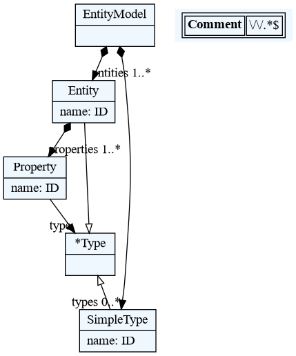
Такође, и модели се могу визуализовати из програмског кода. То се изводи на следећи начин:
from textx.export import model_export
person_model = entity_mm.model_from_file('person.ent')
model_export(person_model, 'person.dot')
Претходни кôд ће произвести фајл person.dot који се може превести у графички
формат следећом командом:
$ dot -Tpng -O person.dot
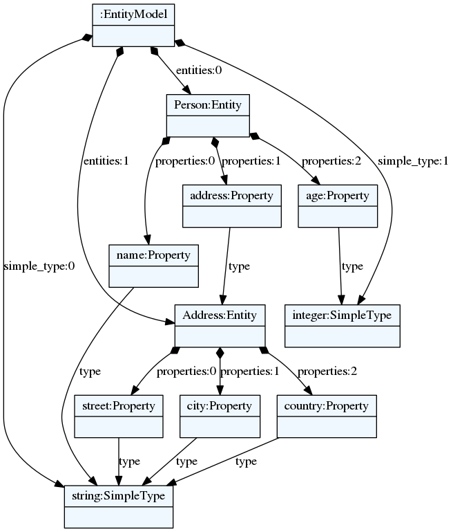
Визуализација може да се обави и употребом textx komande описане у наставку.
from textx.metamodel import metamodel_from_file
robot_metamodel = metamodel_from_file('robot.tx', debug=True)
или
robot_program = robot_metamodel.model_from_file('program.rbt',
debug=True)
textX се у мод за отклањање грешака може поставити и употребом textx команде и
параметра -d (видети 10).
$ textx -d visualize robot.tx program.rbt
*** PARSING LANGUAGE DEFINITION ***
New rule: grammar_to_import -> RegExMatch
New rule: import_stm -> Sequence
New rule: rule_name -> RegExMatch
New rule: param_name -> RegExMatch
New rule: string_value -> OrderedChoice
New rule: rule_param -> Sequence
Rule rule_param founded in cache.
New rule: rule_params -> Sequence
...
>> Matching rule textx_model=Sequence at position 0 =
>> Matching rule ZeroOrMore in textx_model at posit
>> Matching rule import_stm=Sequence in textx_m
?? Try match rule StrMatch(import) in import_
>> Matching rule comment=OrderedChoice in imp
?? Try match rule comment_line=RegExMatch
-- NoMatch at 0
?? Try match rule comment_block=RegExMatc
...
Generating 'robot.tx.dot' file for meta-model.
To convert to png run 'dot -Tpng -O robot.tx.dot'
Generating 'program.rbt.dot' file for model.
To convert to png run 'dot -Tpng -O program.rbt.dot'
Attribute: 'attr' ref=[Class|FQN|^packages*.classes]
name=ID ';';
textx командаtextx команда
textx CLI команда није подразумевано инсталирана када инсталирате textX
библиотеку. Да бисте имали ову команду доступну потребно је да инсталирате cli
зависности на следећи начин:
pip install textx[cli]
Основно упутство за употребу може се добити позивом команде без параметара или
са параметром --help односно -h.
$ textx --help
Usage: textx [OPTIONS] COMMAND [ARGS]...
Options:
--debug Debug/trace output.
--help Show this message and exit.
Commands:
check Check/validate model given its file path.
generate Run code generator on a provided model(s).
list-generators List all registered generators
list-languages List all registered languages
version Print version info.
Излистане команде доступне су од стране основне textX библиотеке. Додатне команде ће бити доступне по инсталацији Пајтон пакета који региструју нове textX команде.
check поткоманда$ textx check --grammar robot.tx program.rbt
Error:
/home/igor/repos/textX/textX/examples/robot/program.rbt:3:3:
Expected 'initial' or 'up' or 'down' or 'left' or 'right'
or 'end' => 'al 3, 1 *gore 4 '
Vidimo da u redu 3, koloni 3 imamo grešku. Parser nam prijavljuje šta je
očekivano na toj lokaciji i iza znaka => vidimo deo fajla, odnosno kontekst gde
se greška nalazi. Karakter * obeležava lokaciju unutar konteksta.
generate поткомандом$ textx list-generators
any -> dot textX[2.3.0] Generating dot visual...
textX -> dot textX[2.3.0] Generating dot visual...
textX -> PlantUML textX[2.3.0] Generating PlantUML v...
Видимо да имамо три регистрована генератора од стране textX пакета. Први генератор је у стању да трансформише било који модел на dot језик. Други генератор трансформише textX моделе (тј. метамоделе) у dot. Трећи генератор трансформише метамоделе у PlantUML дијаграме1.
dot фајлаНа пример, за визуализацију метамодела потребно је урадити следеће:
$ textx generate robot.tx --target dot --overwrite
Generating dot target from models:
/home/igor/repos/textX/textX/examples/robot/robot.tx
-> /home/igor/repos/textX/textX/examples/robot/robot.dot
To convert to png run "dot -Tpng -O robot.dot"
Овом командом позивамо генератор који је регистрован за .tx екстензију и бирамо
циљни формат/платформу, у овом случају dot. Генератор који ће бити позван је
textX -> dot са списка добијеног употребом list-generators. dot фајл који смо
добили можемо конвертовати у слику према упутству:
$ dot -Tpng -O robot.dot
Добићемо слику у облику PNG фајла.
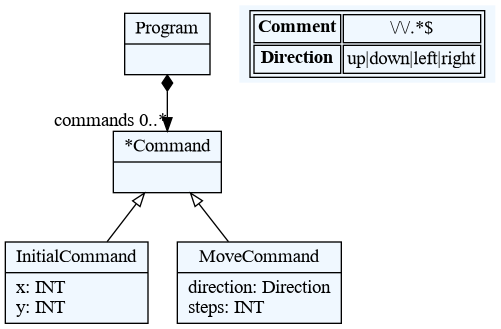
Уместо креирања слике, dot фајл можемо прегледати неким од dot прегледача. На
пример:
$ xdot robot.dot
Алтернативно, метамодел можемо конвертовати у UML дијаграм употребом PlantUML
алата. Да бисмо креирали PlantUML фајл из метамодела позивамо команду generate
на следећи начин:
$ textx generate robot.tx --target plantuml --overwrite
Generating plantuml target from models:
/home/igor/repos/textX/textX/examples/robot/robot.tx
-> /home/igor/repos/textX/textX/examples/robot/robot.pu
To convert to png run "plantuml robot.pu"
Затим можемо креирати PNG слику са plantuml командом према упутству.
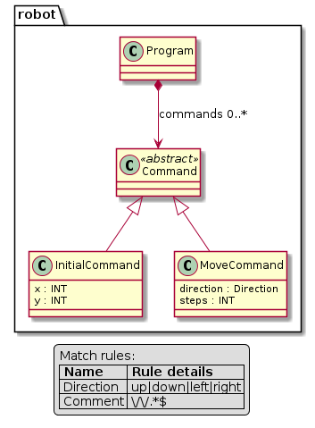
dot фајла за моделУколико желимо да визуализујемо модел потребно је навести и граматику на следећи начин:
$ textx generate --grammar robot.tx program.rbt --target dot --overwrite
Generating dot target from models:
/home/igor/repos/textX/textX/examples/robot/program.rbt
-> /home/igor/repos/textX/textX/examples/robot/program.dot
To convert to png run "dot -Tpng -O program.dot"
Инстанцирати LanguageDesc класу где као параметре наводимо: јединствени назив
језика, фајл образац/екстензију за моделе на датом језику, опис и функцију
(тачније Пајтон callable) који врши креирање и конфигурацију метамодела.
from textx import LanguageDesc
def entity_metamodel():
# Funkcija konstruiše i vraća metamodel
# Npr. poziva metamodel_from_file
...
entity_lang = LanguageDesc(
'entity',
pattern='*.ent',
description='Entity-relationship language',
metamodel=entity_metamodel)
Инстанцу LanguageDesc затим можемо регистровати употребом register_language
позива:
from textx import register_language
register_language(entity_lang)
По обављеној регистрацији метамодел се може добити на следећи начин:
from textx import metamodel_for_language
lang_mm = metamodel_for_language('entity')
Декларативан начин регистрације путем setup.py, односно setup.cfg. Користимо
улазне тачке (енг. entry points), стандардан механизам Пајтон setuptools пакета:
setup(
...
entry_points={
'textx_languages': [
'entity = entity.metamodel:entity_lang',
],
},
Улазна тачка се зове textx_languages - листа стрингова облика "<име језика> =
<путања_до_LanguageDesc_инстанце>". У овом примеру инстанца LanguageDesc се
налази у пакету entity.metamodel. Варијабле тј. референца се зове entity_lang.
Алтернативно, можемо користити и новији начин употребом setup.cfg фајла:
[options.entry_points]
textx_languages =
entity = entity.metamodel:entity_lang
Декоратор language - параметри су назив језика и екстензија фајлова модел.
Docstring се користи као опис.
from textx import language
@language('entity', '*.ent')
def entity_lang():
"""
Entity-relationship language
"""
# Funkcija konstruiše i vraća metamodel
# Npr. poziva metamodel_from_file
...
Уколико смо успешно регистровали језик команда textx list-languages ће га
приказати у листи.
Користимо инстанцу GeneratorDesc. При инстанцирању наводимо: назив језика, назив
циљне технологије, опис и на крају функцију која врши генерисање. Функција мора
бити следећег облика:
def generator(metamodel, model, output_path, overwrite, debug,
**custom_args)
Параметри генератор функције су следећи:
metamodel — инстанца метамодела изворног језика,model — инстанца модела за који вршимо генерисање,output_path — циљна путања у фајл систему где треба сместити генерисани кôд,overwrite — да ли се врши преписивање циљних фајлова,debug — да ли се генератор позива у моду за отклањање грешака,**custom_args — додатни параметри специфични за генератор.
Декоратор generator - параметри су назив језика и назив циљне платформе. Опис
генератора се наводи у docstring-у генератор функције.
from textx import generator
@generator('entity', 'java')
def entity_java_generator(metamodel, model, output_path,
overwrite, debug, **custom_args)
"Entity-relationship to Java language generator"
# Код који врши генерисање на основу модела.
Регистрација се врши у setup.cfg (или setup.py) на исти начин као и језик с тим
што се улазна тачка назива textx_generators:
[options.entry_points]
textx_generators =
entity_java = entity.generators:entity_java_generator
По успешној регистрацији команда textx list-generators ће листати информације о
генератору.
Регистровани генератор се може позвати командом text generate. На пример:
$ textx generate mymodel.ent --target java --overwrite
--meaning_of_life 42
У претходној команди позивамо генератор регистрован за фајлове са екстензијом
.ent над моделом mymodel.ent. У питању је Entity језик. Циљна платформа је java.
Додатни параметар meaning_of_life је специфичан за генератор и биће прослеђен
кроз custom_args речник.
Иницијални пројекат креирамо са следећом командом:
$ textx startproject <folder>
Ова команда покреће генератор који поставља пар питања1 и затим креира пројекат у задатом фолдеру. Добра пракса је да се затим пројекат инсталира у текуће радно окружење у развојном моду са:
$ pip install -e <folder>
По успешној инсталацији ваш језик, односно генератор је исправно регистрован и
видљив за команде textx list-languages, односно textx list-generators.
Команда startproject није дефинисана основном textX библиотеком већ пројектом
textX-dev. Због тога је потребно инсталирати овај Пајтон пакет или директно са:
$ pip install textX-dev
или путем инсталације свих развојних зависности за textX на следећи начин:
$ pip install textX[dev]
да бисте имали startproject доступну као поткоманду textx команде.
Да би се повећала поновна искористивост језичких подршки, фирма Microsoft је у склопу свог VS Code едитора издвојила језичку "памет" у посебну серверску компоненту са којом едитор комуницира у улози клијента. Протокол комуникације је данас отворени стандард под називом протокол језичких сервера (енг. Language Server Protocol - LSP).
Проблем димензије \(m × n\) мењамо у проблем димензије \(m + n\).
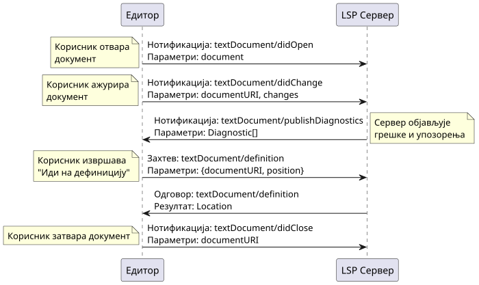
LSP протокол је базиран на JSON-RPC, односно позивању удаљених процедура (енг. Remote Procedure Call - RPC) разменом JSON порука.
Алат за креирање ЈСД textX има подршку за LSP кроз пројекат textX-LS. Идеја овог пројекта је аутоматско генерисање језичких сервера за све језике који су креирани употребом textX алата. Библиотека која пружа генеричке сервисе и омогућава брз развој језичких сервера на програмском језику Пајтон је pygls.
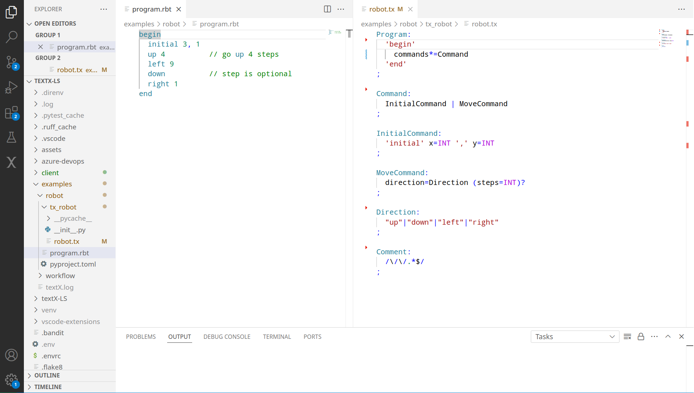
Омогућава једноставно испробавање и играње са textX језицима без потребе за локалном инсталацијом.
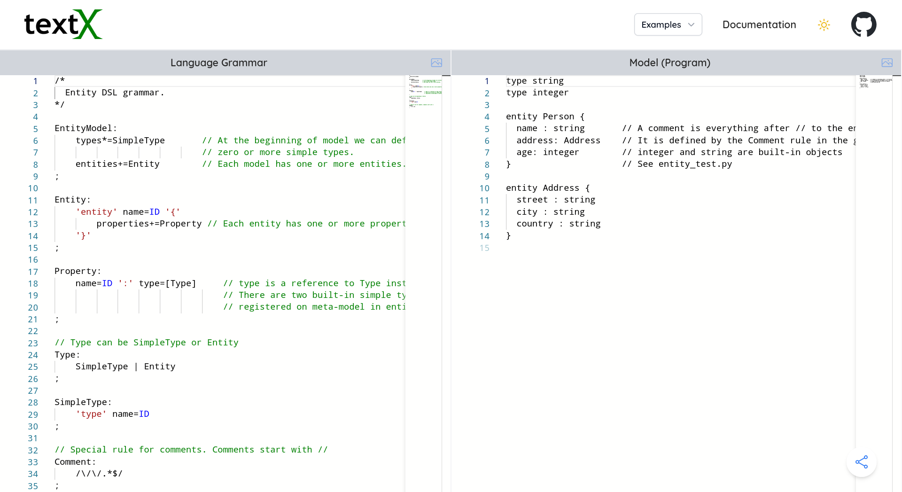